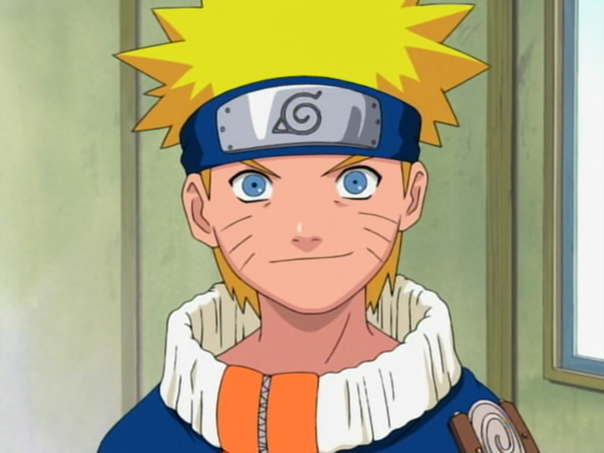

Naruto Uzumaki
Naruto Uzumaki é um ninja rejeitado que guardava um monstro dentro de si, mas superou o isolamento para se tornar o maior herói do mundo e o líder (Hokage) de sua vila.

Noticias sobre o exame chunin
O Exame Chunin é uma avaliação militar do universo de Naruto que serve para testar as habilidades de ninjas iniciantes (Genin) e promovê-los ao posto de Chunin (líderes de equipe).